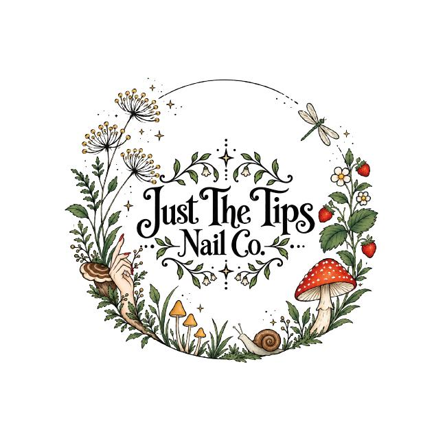

Gel Manicure
$351 hour
A classic manicure with a little extra staying power. Includes nail shaping, cuticle care, one solid gel polish color, and a relaxing hand massage.
Perfect if you love your natural nails but want a shiny, long-lasting finish.
Thoughtful nail care and creative, hand-painted details from Jacklyn at Just The Tips Nail Co. Come as you are, settle in, and leave with nails that feel like you.
Find us inside Ink and Ivory at 133 Green Bag Road, Morgantown.

From a classic gel manicure to custom art, choose what fits your nails and your style. Prices and appointment times are listed below.
I’m the hands behind Just The Tips Nail Co. I love the little details that make a set feel entirely yours, from a simple finish to playful art inspired by the outdoors.
My new space is inside Ink and Ivory, and I can’t wait to welcome you in.
Follow along on Instagram →“A little time for yourself. A set that makes you smile every time you look down.”
JUST THE TIPS NAIL CO.Just The Tips Nail Co. will be located inside Ink and Ivory. Look for the business at the address below when you arrive.
133 Green Bag Road
Morgantown, WV 26501Opening October 5, 2026
Opening October 5 inside Ink and Ivory. Choose a service and an available time in Jacklyn’s Square booking page. Have a question about nail art? Reach out on Instagram.
Book your appointment